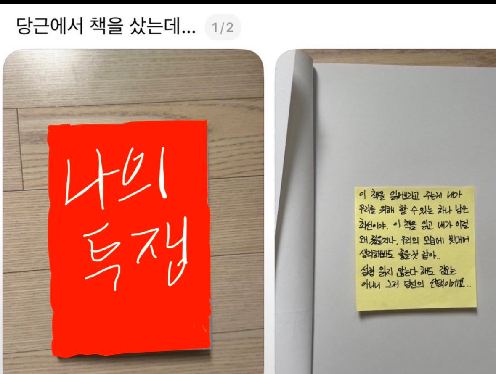
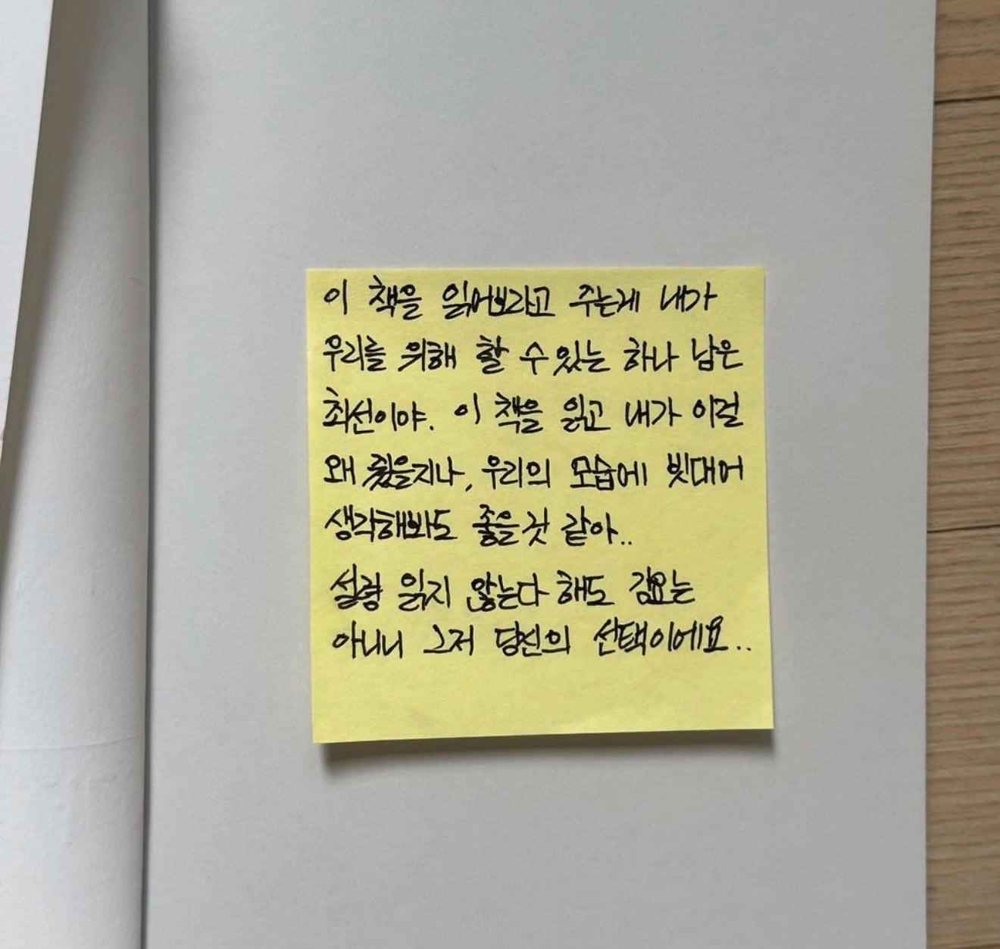

원문이 책바이럴 하는 게시글이라 표지 가림


원문이 책바이럴 하는 게시글이라 표지 가림
책 제목이 나의투쟁인줄 ㅋㅋ
독일인인가
인간관계나 심리학에 대한 책인가
이거보고 나의 투쟁 주문했다.
나의투쟁에 저리 붙여놨다는줄 알았어
82년생 그책아님?
mein kampt....
Heil Hitler!
이게 마인크래프트인가 머시긴가 그거맞지?
마인캄프...... 콧수염을 찬양해라
마인크래프트 사달라고!!
개붕이 나의 투쟁 읽는구나
나는 인 강의 브라우니에서 태어났다는 사실에 행복을 느끼고 있다
마인크래프트 ㄷㄷ
퓨러... 한글마저도 이리 유려하게 쓰시다니
별개로 포스트잇 글 존나 못썼다 진짜 안읽힘
나의투쟁 바이럴
마인크래프트라고 했잖아요!!
이혼했나보네ㅠㅋㅋㅋㅋㅋ
저거 1990년대에 나와서 지금까지 몇천만부는 팔린 존나 유명한책이라 바이럴은 아닐거임
내부도 ai같은데 ㅋㅋㅋㅋㅋ
책 제목 알아보니까 먼가 바이럴스럽긴하네 ㅋㅋㅋ
선생님 얘 콧수염 나는데요?
이걸 왜 줬을지 상상해보라고? 나의투쟁?
이별 앞둔 연인 사이에 마지막 노력으로 많이들 선물하는 것 같더라고. 개인적으로 꽤 좋은 책이라고 생각하고 어떤 마음일지 상상이 가서 짠하네.
나의 투쟁을..?
화성 그거임?
게리 채프먼, 《5가지 사랑의 언어》, 이게 뭐라고 표지 가릴 필요가 있나 싶음. 괜찮은 책이다.
책의 괜찮음 유무랑 상관 없이 바이럴임
생명의말씀사?
저자가 기독교심리학자라서 그쪽 출판사에서 출간은 많이 하는데, 저자가 임상경험 바탕으로 고안한 방법론이고 대중서적이지, 애당초 심리학 이론서가 아냐. 나는 기독교 냄새 거의 못 느꼈음.
비슷한 시기에 같이 유행했던 《화성에서 온 남자 금성에서 온 여자》하고 같은 부류의 책이라고 보면 된다. 걍 남녀가 사이 좋게 지내는 방법에 대한 책임. 30년 전에 이미 유행해서 휩쓸고 지나간 클래식에 바이럴이고 뭐고..
근데 진짜 뭔 책을 준거임 스타크래프트 공략집은 아닐거고


싀터커 리큳트 니흿트 인 데어 벜타이디꿍 존던 임 안그러프!!!!
나의투쟁바이럴이네
못난놈들은 얼굴만 봐도 흥겹다
나의 투쟁 읽어보라는 줄